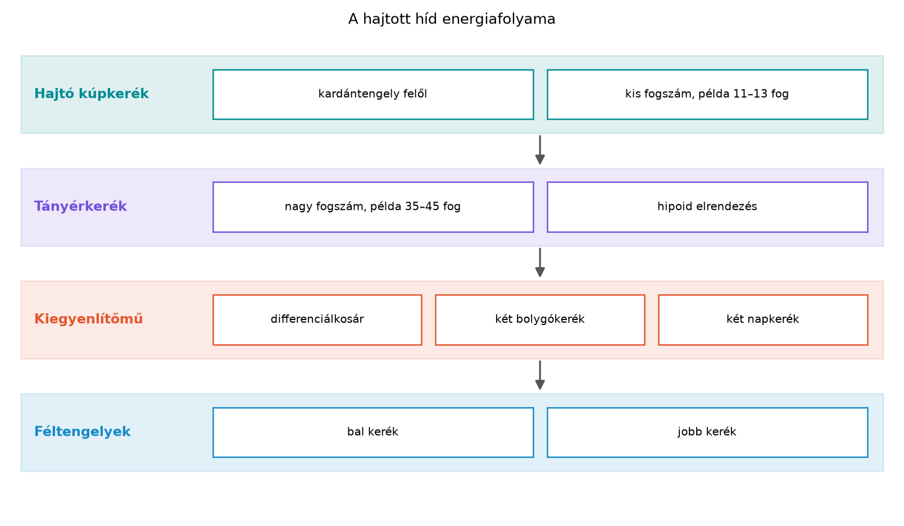

Képzeld el a műhelyt: hátsókerék-hajtású kisteherautó érkezik, mert a bal hátsó kereke havas, jeges úton kipörög, a jobb oldali pedig „nem húz”. Vagy egy elsőkerék-hajtású autó kanyarban csörgő, búgó hangot ad, és gázadásra elhúz az egyik irányba. Mindkét panasz a tengelyhajtás, illetve a kiegyenlítőmű működéséhez vezet: meg kell értenünk, miért kell a hajtott kerekek fordulatszámát egymás között megosztani, és miért nem elég a két kereket mereven összekötni.
A kiegyenlítőmű a hajtott tengely egyik leginkább félreértett szerkezete: sokan azt hiszik, hogy a nyomatékot „odaviszi, ahol nagyobb a tapadás”, pedig a hagyományos, nyitott kiegyenlítőmű éppen ellenkezőleg viselkedik. Ha ezt a fejezetet megérted, a későbbi összkerékhajtási és hajtáslánc-szerelési témák sokkal könnyebbek lesznek.
Emeld fel a hajtott hidat emelőn, és nézd meg a híd középső részét, a differenciálházat. A kardántengely felől egy kis kúpkerék, a hajtó kúpkerék (pinion) hajtja a nagy tányérkereket (crown wheel; „koronakerék”), amelyet csavarokkal rögzítenek a differenciálkosárra. A kosárban két vagy négy kisebb bolygókerék (differential pinion; „pókkerék”) kapcsolódik két nagyobb napkerékhez (side gear), amelyek a bal és a jobb féltengelybe adják át a hajtást.
Az alábbi rétegábra ezt az energiafolyamot mutatja felülről lefelé:

A rétegábra azt mutatja, hogy a tengelyhajtás először lelassítja a kardántengely fordulatát és megnöveli a nyomatékot, a kiegyenlítőmű pedig ezt a nyomatékot a két féltengelyre osztja szét úgy, hogy közben a két kerék fordulatszáma kanyarban eltérő lehet.
Definíció. A tengelyhajtás (final drive; „véglehajtás”) a hajtott tengely azon hajtóműve, amely a kardántengely vagy a váltó kimenő fordulatát a kerekek számára megfelelő, nagyobb nyomatékká alakítja, és – hosszirányú motor esetén – a hajtás irányát 90°-kal a féltengelyek irányába fordítja.
Definíció. A kiegyenlítőmű vagy differenciálmű (differential; műhelyi szleng: „difi”) a hajtott tengelyben lévő bolygómű-szerű elosztó, amely lehetővé teszi, hogy a bal és a jobb kerék fordulatszáma eltérő legyen, miközben a bejövő nyomatékot folyamatosan átadja.
Definíció. A differenciálzár a kiegyenlítőmű olyan kiegészítője, amely a két hajtott kerék fordulatszámát időlegesen közel azonossá kényszeríti, így a nyomaték nem tud „elmenekülni” a kipörgő kerék irányába.
Összefüggés. A tengelyhajtás áttétele a fogszámokból:
A kerékfordulat:
A fordulatszám dimenziója itt .
A nyitott kiegyenlítőmű fordulatszám-egyensúlya, ha a belső veszteség elhanyagolható:
ahol a tányérkerék/differenciálkosár fordulatszáma. Kanyarban a külső kerék gyorsabban, a belső lassabban forog, de az összegük a kosár fordulatának kétszerese marad.
A nyomatékviszony a nyitott kiegyenlítőműnél – súrlódást elhanyagolva –:
Ez a szerkezet lényegéből következik: a bolygókerekek csapágyazása viszonylag kis belső súrlódású, ezért a nyitott kiegyenlítőmű gyakorlatilag egyenlő nyomatékot oszt, nem pedig egyenlő teljesítményt vagy egyenlő fordulatszámot.
A tengelyhajtás leggyakrabban kúpkerékpár: a hajtó kúpkerék és a tányérkerék tengelyei egy pontban metszik egymást. A hipoid elrendezés ehhez képest annyival több, hogy a hajtó kúpkerék tengelye a tányérkerék középsíkja alatt fut, tehát a két tengely nem metszik egymást. A „hipoid” név is erre utal: hiperboloid fogfelület.
A hipoid előnyei a klasszikus kúpkerékpárhoz képest:
Hátránya, hogy a fogak között nagyobb csúszás lép fel, ezért a hipoid tengelyhajtáshoz speciális hipoid hajtóműolaj kell, amely hő- és kopásálló, nagy nyomású (EP) adalékot tartalmaz. A gyártói előírás szerint például API GL-5 minőségű, SAE 80W-90 vagy 75W-90 viszkozitású olaj használható (ellenőrizendő: a gyártói adat).
A klasszikus, kúpkerekes kiegyenlítőmű a tányérkerékre csavarozott kosárban helyezkedik el. A kosárban a bolygókerekek a kosárhoz rögzített csapokon forognak, és két oldalról a napkerekekhez kapcsolódnak. A napkerekek belső bordázatába illeszkednek a féltengelyek.
Egyenes menetben a kosár forgása magával viszi a bolygókerekeket is, mert a kerekek egyenlő ellenállása miatt a bolygókerekek nem forognak a saját csapjaik körül, csak „keringenek” a kosárral. Ekkor a bal és a jobb féltengely fordulata azonos: .
Kanyarban a belső kerék kisebb utat tesz meg, ezért lassabban forog. A külső kerék gyorsabban forog, a kiegyenlítőmű bolygókerekei pedig saját tengelyük körül forognak, és a fordulatszám-különbséget kiegyenlítik. A villanymotoros vagy pneumatikus differenciálzár nélküli hajtás ezt teljesen automatikusan teszi.
Az ábra bal oldalán a hajtó kúpkerék a tányérkereket, az a kosarat forgatja; a kosár csapján ülő bolygókerekek a két napkereket és rajtuk át a féltengelyeket hajtják. A jobb oldali kis ábrák a kidolgozott példák számait mutatják: egyenes menetben mindkét kerék 800 1/min-mel forog, kanyarban 760 és 840 1/min (átlaguk a kosár 800 1/min fordulata), jégen pedig nyitott kiegyenlítőnél mindkét kerékre legfeljebb 216 Nm jut. A HTML-változatban a típus (nyitott, lemezes önzáró, zárt, Torsen), a tapadás és a nyomaték állításával követhető a keréknyomatékok alakulása.
A homlokkerekes változat nem kúpkerekekből, hanem homlokkerekekből áll. A hajtás iránya itt párhuzamosan marad, ezért jellemzően olyan hajtásláncban használják, ahol kis tengelyirányú méret vagy aszimmetrikus nyomatékosztás kell – jellemzően központi kiegyenlítőként összkerékhajtásnál (lásd Összkerékhajtás), illetve egyes keresztmotoros hajtásokban (ellenőrizendő: típusadat). A kiegyenlítőmű típusa nem attól függ, hogy a tengelyhajtás 90°-kal fordít-e; ez a tengelyhajtás (kúp-/hipoid vagy homlokkerékpár) tulajdonsága. A bolygókerekek párosával kapcsolódnak egymáshoz és egy-egy napkerékhez (vagy a napkerékhez és a gyűrűskerékhez), így kiegyenlítik a fordulatszám-különbséget.
A homlokkerekes kiegyenlítőműben a bolygókerekek párosával kapcsolódnak egymáshoz, ezért az erőjáték és a beállítás kicsit eltér a kúpkerekes változattól, de a fordulatszám-összefüggés itt is .
Ha a két hajtott kereket merev tengellyel kötnénk össze, kanyarban a külső kerék nagyobb utat tenne meg, a belső pedig megcsúszna. Ez gumikopást, kanyarodási nehézséget és a hajtáslánc feszülését okozná. A kiegyenlítőmű emiatt elengedhetetlen.
Ugyanakkor a nyitott kiegyenlítőműnek van egy fontos korlátja: ha az egyik kerék jégen, sárban vagy levegőben van, akkor a tapadó kerék is csak annyi nyomatékot kaphat, amennyit a kipörgő kerék át tud adni. A differenciálzár és az önzáró kiegyenlítőmű ezt a korlátot csökkenti.
A teljesen kapcsolható differenciálzár mechanikusan, pneumatikusan, elektromágnesesen vagy elektrohidraulikusan mereven összeköti a kosarat és az egyik napkereket, így a bal és a jobb kerék fordulatszáma gyakorlatilag azonos lesz. Terepjáróknál, munkagépeknél ez jelentősen megnöveli a vonóerőt, de aszfalton a kanyarodás közbeni feszülés miatt nem szabad bekapcsolva hagyni, mert a hajtáslánc, a gumik és a felfüggesztés is károsodhat.
A lemezes önzáró kiegyenlítőmű (limited slip differential, LSD) a napkerekek és a kosár közé súrlódó lemezköteget épít. A lemezköteg az egyik kerék kipörgését hagyja, de a másik kerékre nagyobb nyomatékot juttat. Ennek mérőszáma a zárási tényező:
ahol a nagyobb, a kisebb keréknyomaték. Például azt jelenti, hogy a nyomatékkülönbség a teljes nyomaték 40%-a lehet, azaz a tapadó kerék lényegesen többet kaphat, mint a pörgő.
A Torsen típusú kiegyenlítőmű csavarkerekes, nyomatékérzékeny szerkezet. A csavarkerekek egymáson és a házon való gördülése miatt a nyomatékarány korlátozottan, de folyamatosan eltérhet. A gyártók gyakran adják meg a torque bias ratio (TBR) értékét, például . Ez azt jelenti, hogy a jobban tapadó kerékre legfeljebb 2,5-szer akkora nyomaték juthat, mint a kevésbé tapadóra. A Torsen nem teljes zár, ezért kanyarban finomabban viselkedik, és nem igényel vezetői beavatkozást.
Az elektronikusan szabályozott kiegyenlítőmű a zárási nyomatékot a fékrendszer, a motorirányító és a menetstabilizáló rendszer jelei alapján szabályozza. Az elektrohidraulikus vagy elektromágneses működtető a lemezes zárást fokozatmentesen állítja, így a hajtás a kanyarban is optimálisan tud dolgozni. Fontos, hogy ez nem azonos a fékalapú kipörgésgátlóval (EDS, elektronikus differenciálzár-szimuláció), amely a pörgő kereket fékezi, és a nyitott kiegyenlítőmű nyomatékmegosztását használja ki.
A következő táblázat a fő típusokat hasonlítja össze.
| Típus | Fordulatszám-megosztás | Nyomatékmegosztás | Beavatkozás | Jellemző alkalmazás |
|---|---|---|---|---|
| Nyitott kiegyenlítő | kanyarban eltérő | egyenlő | nincs | hétköznapi autók |
| Kapcsolható zár | kényszerítetten azonos | a tapadó kerékre nagyobb | vezető/kapcsoló | terepjárók, munkagépek |
| Lemezes önzáró | eltérő, de korlátozott | zárási tényezővel | mechanikus | sportautók, haszonjárművek |
| Torsen | eltérő | nyomatékarány-korlát | mechanikus | sport-, terep- és prémiumautók |
| Elektronikusan szabályozott | eltérő | aktív, fokozatmentes | vezérlőegység | modern AWD, sportautók |
Az értékek tanulási példák (ellenőrizendő: gyártói adat).
1. Példa – tengelyhajtási áttétel és
kerékfordulat.
Egy kisteherautó tengelyhajtásában a hajtó kúpkerék 11, a tányérkerék 41
fogú. A kardántengely fordulatszáma egy adott sebességnél
.
Az áttétel:
A féltengelyfordulat, ha a hajtott kerék nem csúszik:
Ellenőrzés: a -os áttétel tipikus hátsóhíd-áttétel; a kardánfordulatból így a kerék jóval lassabban forog, ami összhangban van a nagyobb nyomaték irányával. ∎
2. Példa – fordulatszám-megosztás kanyarban.
Egy hátsókerék-hajtású autó hídjának bemenő fordulata
.
A bal (belső) kerék fordulatszáma kanyarban
.
A képletből:
A külső kerék tehát fordulattal forog, ami éppen a kanyar ívhosszkülönbségéből adódó sebességkülönbséget mutatja. ∎
3. Példa – a nyitott kiegyenlítőmű tapadási
korlátja.
Egy jármű egyik hajtott kerekének kerékterhelése
,
a jég és a gumiabroncs közötti tapadási tényező
,
a gördülési sugár
.
Az egyik kerék által átadható maximális nyomaték:
Ha a tengelyhajtásból érkező nyomaték lenne, a nyitott kiegyenlítőmű miatt mindkét kerékre legfeljebb juthat, összesen . A fennmaradó nyomaték nem adódik át, a motor felpörög, a kipörgő kerék gyorsan forog. Ezért van szükség ilyen helyzetben differenciálzárra vagy önzáró kiegyenlítőműre. ∎
A tengelyhajtás és a kiegyenlítőmű javítása precíz munkát igényel, mert a fogaskerékpár beállítása közvetlenül befolyásolja a zajt, a kopást és a hajtás élettartamát.
Biztonsági korlát. A beállítási munka csak tanműhelyben, oktató felügyeletével, a gyártói javítási utasítás szerint végezhető. A megadott hézag- és nyomatékértékek tanulási példák, mindig a gyártói adatot kell ellenőrizni. A járművet csak az előírt emelési pontokon, állványra helyezve szabad megemelni; csak kocsiemelővel tartott jármű alá bemenni tilos.
A beállítás során két fő paramétert kell ellenőrizni:
Az ábra a hajtó (terhelt) fogoldal nyomát mutatja: a helyes hordkép a fog közepén, enyhén az orr (belső vég) felé esik. A túl magas vagy túl mély nyomot a hajtó kúpkerék tengelyirányú helyzetével, a sarok vagy orr felé tolódott nyomot a tányérkerék oldalirányú helyzetével (ezzel a fogholtjátékkal) javítjuk; az állítás mértéke és az alátétek gyártói beállítási adatok (ellenőrizendő).
A művelet során két csapágyazást különböztetünk meg. A hajtó kúpkerék csapágy-előfeszítését gyakran összenyomódó (kollapszibilis) távtartó hüvely adja: az anyát fokozatosan húzzuk, és közben a kúpkerék átforgatási nyomatékát mérjük, amíg el nem éri a gyártói értéket (ellenőrizendő: gyártói adat); az előfeszítés helyességét nem a meghúzási nyomaték, hanem ez az átforgatási nyomaték igazolja, és a hüvely túlhúzás után nem használható újra. A kosár (tányérkerék) csapágyainak előfeszítését oldalsó alátétek vagy beállító anyák adják; a kosárnak játékmentesen, de megfelelő előfeszítéssel kell forognia.
Az összeszerelés után a hidat gyártó által előírt hipoidolajjal kell feltölteni, és a töltőcsavar nyomatékkal meghúzni. A használt olaj fémreszelék-tartalmát mindig vizsgáld meg: a sárgaréz vagy acélreszelék fogaskerék- vagy csapágykopásra utal (szinkrongyűrű a hídban nincs, az a sebességváltóban van). Önzáró (lemezes) hídba a gyártó által előírt, súrlódásmódosító (LS) adalékos olaj kell (ellenőrizendő: gyártói adat).
Egy hátsókerék-hajtású (hipoid hidas), Torsen önzáró kiegyenlítőművel felszerelt sportautó tulajdonosa panaszkodik, hogy kanyarban gázadásra az autó „csörög”, és egyenetlenül húz. A műhelyben először a hajtott kerekeket emelik fel, és kézzel forgatják az egyik kereket: a másik kerék az ellenkező irányba forog, ami a kiegyenlítőmű normális működése. Ezután diagnosztikai műszerrel kiolvassák a hajtáslánc-vezérlő hibakódjait (a kipörgésgátló és az ESP beavatkozásai is utalhatnak a hibára); a Torsen tisztán mechanikus, ezért aktuátort nem kell keresni.
A vizsgálat során kiderül, hogy az egyik Torsen csavarkerék fogfelülete kagylósan kikopott, mert korábban téves viszkozitású hajtóműolajat töltöttek a hídba. A javítás során az olajat leeresztik, a kiegyenlítőművet kiszerelik, a kopott csavarkerekeket gyártói cserealkatrésszel pótolják, a csapágyakat és a tömítéseket kicserélik. Összeszerelés után a gyártói eljárás szerinti csapágy-előfeszítést, a holtjátékot és a hordképet ellenőrzik, majd próbaúton megerősítik, hogy a csörgés megszűnt.
A hiba tanulsága: a differenciálműhöz csak a gyártó által előírt, megfelelő specifikációjú olaj használható.
Hiba 1. Azt gondolni, hogy a nyitott kiegyenlítőmű a
nyomatékot a jobban tapadó kerékre irányítja.
Helyes gyakorlat: a nyitott kiegyenlítőmű egyenlő
nyomatékot oszt, ezért a kipörgő kerék a tapadó kerék nyomatékát is
korlátozza. A tényt a fenti 3. példa számszerűen is megmutatja.
Hiba 2. A hipoid tengelyhajtásba hagyományos, nem
hipoid hajtóműolajat tölteni.
Helyes gyakorlat: a hipoid fogazat nagy csúszása miatt
csak a gyártói előírás szerinti, EP-adalékos hipoidolajat szabad
használni (ellenőrizendő: gyártói adat).
Hiba 3. A differenciálzárat aszfalton bekapcsolva
felejteni.
Helyes gyakorlat: a zár csak rossz tapadású úton,
alacsony sebességnél használható, és a gyártó szerinti sebességhatár
felett ki kell kapcsolni; aszfalton a merev kényszerkapcsolat feszíti a
hajtásláncot és gyors gumikopást okoz.
A válaszok a ### Megoldások elején, „Önellenőrzés –
válaszok” alcím alatt találhatók.
1. feladat (A)
Fogalmazd meg, mi a tengelyhajtás és a kiegyenlítőmű feladata, és írd
fel a fordulatszám-összefüggést!
2. feladat (A)
Egy hátsó híd hajtó kúpkerekének fogszáma 10, a tányérkeréké 39.
Számítsd ki az áttételt és a kerékfordulatot, ha a kardántengely
fordulata
!
Ellenőrizd a nagyságrendet!
3. feladat (B)
Egy kanyarban a belső kerék fordulatszáma
,
a külsőé
.
Mennyi a híd bemenő fordulata? Mennyi a két kerék fordulatának
százalékos eltérése a bemenőhöz képest?
4. feladat (B)
Egy lemezes önzáró kiegyenlítőmű zárási tényezője
.
A bemenő nyomaték
.
Számítsd ki a nagyobb és a kisebb keréknyomatékot!
5. feladat (C)
Miért következik be az, hogy ha egy hajtott kerék jégen áll, a másik
kerék aszfalton akkor sem tud nagy nyomatékot átadni, ha a motor és a
hajtáslánc elvileg erre képes lenne? Vezesd le a nyomatékmegosztásból és
a tapadási korlátból!
6. feladat (D)
Egy hátsókerék-hajtású autó tulajdonosa azt panaszolja, hogy a híd
gyorsításnál búg, és gázelvételre a zaj halkabb. Sorold fel a vizsgálat
lépéseit, és adj meg legalább két lehetséges okot, amelyet a műhelyben
ellenőrizni kell!
Önellenőrzés – válaszok
1. feladat megoldása
A tengelyhajtás a kardántengely nyomatékát megnöveli, fordulatát
lecsökkenti, és hosszirányú motor esetén a hajtást 90°-kal a
féltengelyek felé irányítja. A kiegyenlítőmű a bal és a jobb kerék
fordulatszám-különbségét kiegyenlíti, miközben a bemenő nyomatékot a két
féltengelyre osztja. A fordulatszám-összefüggés:
2. feladat megoldása
Adott:
,
,
.
Keresett:
,
.
Ellenőrzés: a -es áttétel tipikus, a kerékfordulat a kardánfordulat mintegy negyede, ami reális a nagy nyomatékú hátsó hídnál.
3. feladat megoldása
Adott:
,
.
A bal eltérés: , tehát ; a jobb eltérés: , tehát a bemenőhöz képest. A két kerék fordulatszám-különbsége , ami kanyarban a belső és külső kerék eltérő ívhosszának felel meg.
4. feladat megoldása
Adott:
,
.
A zárási tényező:
Mivel , így:
Ebből , . A jobban tapadó kerék tehát nyomatékot kaphat, miközben a kevésbé tapadó -et.
5. feladat megoldása
A nyitott kiegyenlítőmű egyenlő nyomatékot oszt:
.
Ha a bal kerék jégen van, az ott átadható maximális nyomatékot a
tapadási tényező korlátozza:
A másik kerék sem kaphat ennél nagyobb nyomatékot, mert akkor a nyomatékok nem lennének egyenlők. A motor ezért csak a jégkerék által meghatározott, kis nyomatékot tud hasznosítani; a kipörgő kerék megcsúszik, fordulata megnő, de a hajtás nem viszi át a többletnyomatékot. A differenciálzár vagy az önzáró kiegyenlítőmű éppen ezt a korlátot csökkenti.
6. feladat megoldása
A vizsgálat lépései:
- a jármű felemelése és biztos alátámasztása;
- a híd olajszintjének ellenőrzése;
- az olaj leeresztése, fémreszelék vizsgálata;
- a tengelyhajtás holtjátékának mérése mérőórával;
- a hordkép ellenőrzése;
- a kerékcsapágyak és a féltengely-csapágyak játékának
ellenőrzése;
- próbaút, a zaj terhelésfüggésének megfigyelése.
Lehetséges okok: kopott hajtó kúpkerék/tányérkerék fogazat, helytelen holtjáték vagy csapágy-előfeszítés, rossz minőségű vagy elöregedett hajtóműolaj. A zajgörbe jellemzően a fogaskerékpár vagy a csapágyak állapotára utal, ezért a fenti lépésekből indulunk ki.
A tengelyhajtás a kardántengely nyomatékát megnöveli és – hosszirányú motor esetén – a hajtás irányát a féltengelyek felé fordítja. A leggyakoribb kialakítás a kúpkerékpár, ezen belül a hipoid elrendezés, amely alacsonyabb kardánt és csendesebb járást tesz lehetővé, de speciális hipoid hajtóműolajat igényel. A kiegyenlítőmű lehetővé teszi a bal és a jobb kerék eltérő fordulatszámát kanyarban, miközben a nyitott változat a nyomatékot egyenlően osztja: , . Ezért ha az egyik kerék kipörög, a másik sem kaphat nagyobb nyomatékot. A differenciálzár, a lemezes önzáró, a Torsen és az elektronikus szabályozás ezt a korlátot csökkenti. A javításnál a holtjátékot és a hordképet a gyártói adat szerint kell beállítani, a járművet emelőn, állványon, biztonságosan alátámasztva dolgozni, a kiürített hajtóműolajat pedig veszélyes hulladékként kezelni.
Továbbvitt eredmény. A kiegyenlítőmű fordulatszám- és nyomatékmegosztási törvényeit használjuk az Összkerékhajtás alfejezetben a központi differenciálmű megértéséhez, valamint a Kardán, féltengely, csuklók és kiegyenlítőmű szerelése alfejezetben a gyakorlati javítás során.